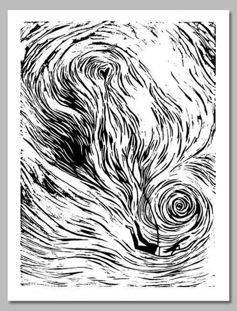

Deux souffles contraires
Il y a en moi
deux souffles contraires :
L’un court,
l’autre veille.
La passion veut,
la patience sait.
La passion éclaire,
La patience construit.
La passion,
c’est l’élan,
le cri.
La patience,
le souffle
après la nuit.
L’une consume,
l’autre refait.
L’une veut tout,
maintenant,
sans barrière,
L’autre sait
que rien ne s’éveille
Sans silence,
sans hiver.
L’une éclaire,
l’autre retient,
Elles se défient,
puis se rejoignent.
L’une consume,
L’autre grandit.
Mais quand leurs bras
se nouent enfin,
Le temps devient
un feu humain.
Mais face au feu,
la pierre attend,
Le temps la sculpte
lentement.
Chaque éclat naît
d’une retenue,
Chaque pas
d’une force contenue.
Et dans leur duel
incertain,
C’est l’âme entière
qu’elles empoignent.
L’une embrase,
l’autre façonne,
Et c’est leur lutte
qui nous couronne.
Djamel Metref
At Yenni le 14 octobre 2025

← Tous les poèmes